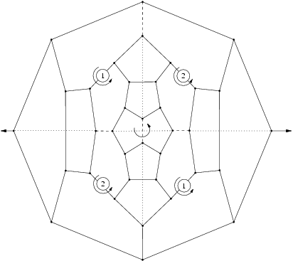
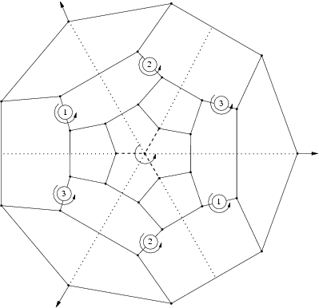
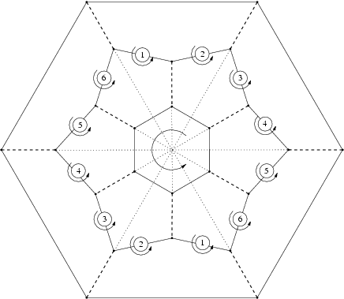
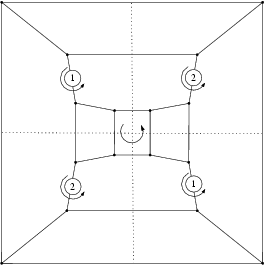

The series  The group is the group generated by a rotation of angle 2pi/m around a fixed axis D and m rotation of order 2 around m axis Dm orthogonal to D.
The group is the group generated by a rotation of angle 2pi/m around a fixed axis D and m rotation of order 2 around m axis Dm orthogonal to D.
Features
- Algebraic structure: group of order 4m containing
 as normal subgroup
as normal subgroup
- Kind of elements
- 1 element: identity,
- m-1 elements: rotation of angle k2pi/m with 1<=k<=m-1 around D,
- m elements: m rotation of order 2 around axis Dk, 1<=k<=m with angle between Dk and Dk+1 equal to pi/m
- m elements: m composition of plane symmetry by P and rotation of angle (1+2k)pi/m
- m elements: plane symmetries by planes Pk containing D and going between Dk and Dk+1.
- A simple way to distinguish between serie and serie
 :
:
- In case, the two-fold axis belong to symmetry plane
- In case, the two-fold axis do not belong to symmetry planes
- Particular cases
- if m=1, then the group is C2h
- Examples
- First Fulleren of symmetry D2d:

- First Fulleren of symmetry D3d:

- First Fulleren of symmetry D5d:

- First Fulleren of symmetry D6d:

- First 4n of symmetry D2d:

- First 4n of symmetry D3d: